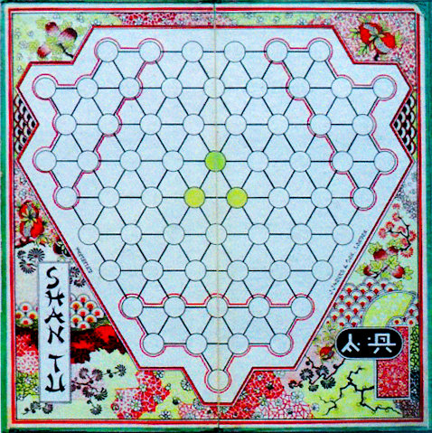

Shan Tu is a game for three players, a combination of race game and checkers. A man can shift to an adjacent empty
position, provided that capture isn’t possible. An adjacent enemy piece is captured by jumping to the opposite,
unoccupied position. A capture sequence must be followed to the end and the longest capture line must be chosen. A
man promotes to king in any of the two enemy camps. The king moves and captures like a man. If it reaches any of the
three center squares, the game is won. Shan Tu was patented in 1893 by Henry Lees, Lancashire, England. The
game was published by Jaques of London. It is a very tactical game; one still has a chance, even when at a material
disadvantage. The following advice is from the rules booklet.
OPENINGS
1. The Lees Opening: Play out along one side of the board, creeping as close as possible to enemies’ bases, and
forming a triangle of three men with its base upon the side.
2. The Brothers Opening: Play out on both sides of the base, as in the Lees Opening, i.e., a triangle on each side of
your base.
3. The Glover Opening: Play solidly toward the centre, forming a compact block: Forming a block of seven pieces if
possible, on or close to the three centre circles.
4. The Torpedo Opening: Push out one or two pieces right between your opponents’ pieces, giving them away to
secure the capture of three or more of either or both your opponents’ pieces.
ADVICE FOR BEGINNERS
• Avoid men in triangles that have not their base upon the sides of the board. Avoid single straight lines
of men.
• Groups of four, five, or seven pieces arranged symmetrically are safest when away from the sides.
• Once you obtain a King, you should give your other men away freely to clear his path to the three centre
circles.
• If an opponent gets a King, either exchange it away or rush all your pieces to the centre.
• If one player refuses to leave their base, the other two should both exchange with him until he alters
his policy.
• Don’t weaken only one opponent at your own expense; but it is wise to weaken a player who already
has a King.
• After a King appears, look several moves ahead, as the play alters completely.
• If you have a King and your total pieces equal both opponents combined, you may exchange one of your
opponents out of existence.
• Never let all three players adopt the same opening.
• The strongest openings are: (1) A triangle with its base on the outside circles (Lees Opening);
(2) Seven pieces arranged symmetrically toward the centre (Glover Opening).
• The most destructive opening is the Torpedo.
• It is often wise to break up an opponent’s triangle whose base lies on a side.
• The essence of Shan Tu strategy: For one to play his two opponents against each other; and the tacit
combination of the two weaker against the strongest player.

Reference
Horn, F. (2024). ‘Shan Tu: An Amazing Game For 3 Players.’ AGPI Quarterly (Summer) 2024.
• You can download my free Shan Tu program here, but you must own the software Zillions of Games to be able to run it (I recommend the download version).
© M. Winther, 2026 March